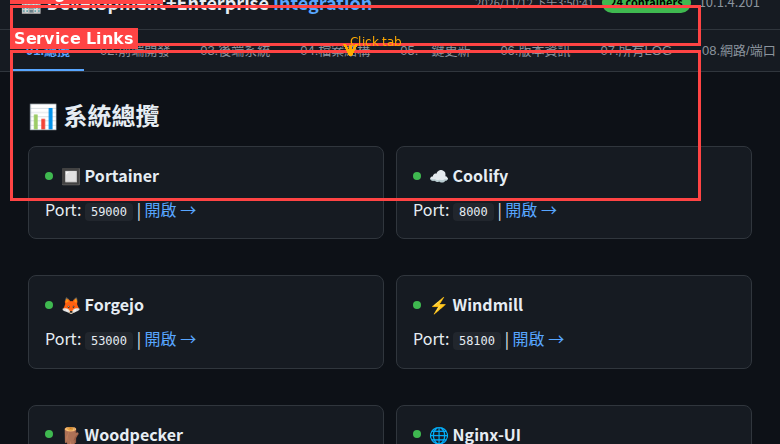
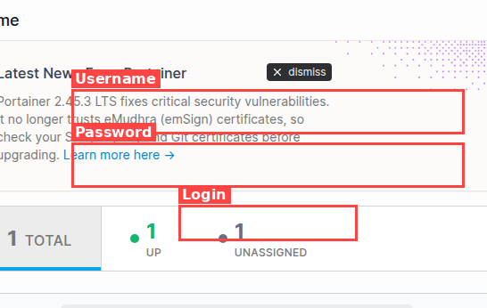
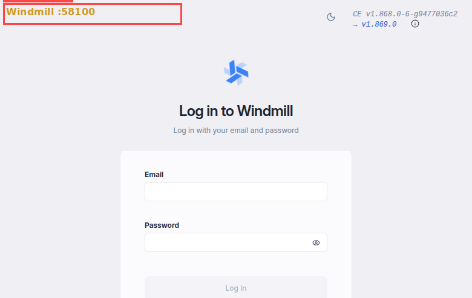
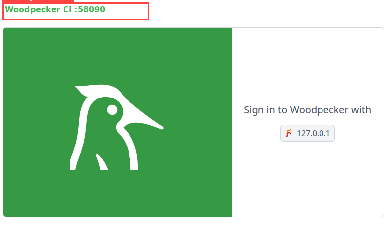

0 需要什麼工具？
git --version (需 2.30+)10.1.4.201所有服務使用同一組帳號密碼：
| 欄位 | 值 |
|---|---|
| 帳號 (Username) | admin958168 |
| 密碼 (Password) | 0982j;6t/6958 |
| Email (部分服務) | jpc202505ms@gmail.com |
; 和斜線 / — 在 URL 或腳本中使用時需要 URL encode！所有服務使用 IP 10.1.4.201，只靠 Port 區分：
| Port | 服務 | 網址 | 用途 |
|---|---|---|---|
| 22 | SSH (主機) | ssh admin958168@10.1.4.201 | 連線主機 |
| 52200 | SSH (Docker) | ssh admin958168@10.1.4.201 -p 52200 | 連線 Docker 容器 |
| 59000 | Integration Portal | http://10.1.4.201:59000 | This Portal |
| 59009 | Portainer | http://10.1.4.201:59009 | Docker Manage |
| 8000 | Coolify | http://10.1.4.201:8000 | 自動部署 |
| 53000 | Forgejo | http://10.1.4.201:53000 | Git 倉庫 |
| 58100 | Windmill | http://10.1.4.201:58100 | 工作流自動化 |
| 58090 | Woodpecker | http://10.1.4.201:58090 | CI/CD |
| 9000 | Nginx-UI | http://10.1.4.201:9000 | Nginx 管理 |
| 55000 | Registry | http://10.1.4.201:55000 | Docker Registry |
| 58168 | Webmin | https://10.1.4.201:58168 | 系統管理 |
| 58300 | Test Deploy | http://10.1.4.201:58300 | 測試部署 |
0.0.0.0（對外開放），從同網段任何機器皆可存取。1 連線到主機 (Ubuntu)
# Windows (PuTTY): Host=10.1.4.201, Port=22, Username=admin958168
# Mac/Linux Terminal:
ssh admin958168@10.1.4.201密碼：0982j;6t/6958
2 連線到 Docker 容器 (直接 SSH)
# 連線到隔離的 Docker 開發容器
ssh admin958168@10.1.4.201 -p 52200這個容器有獨立的開發環境，適合安全測試。
3 連線後檢查 Docker
# 查看所有容器
docker ps --format "table {{.Names}}\t{{.Status}}\t{{.Ports}}"
# 查看容器日誌
docker logs <容器名> --tail 50
# 進入容器 shell
docker exec -it <容器名> /bin/bash1 Open Browser, go to http://10.1.4.201:59000/

這是系統的中央控制台，包含 20 個標籤頁：
3 登入後看到 Dashboard

在這裡你可以：
3 Clone 倉庫到本機
# Clone 方式 (HTTP)
git clone http://10.1.4.201:53000/admin958168/test-deploy.git
# Clone 方式 (SSH) — 需先設定 SSH key
git clone ssh://git@10.1.4.201:50022/admin958168/test-deploy.git4 目前倉庫清單
| 倉庫名 | 說明 | GitHub Mirror |
|---|---|---|
| test-deploy | 測試部署用 | ✅ |
| Official-Area-ApacheMYSQL | Apache + MySQL | ✅ |
| Official-Area-NginxMYSQL | Nginx + MySQL | ✅ |
| Official-Area-NginxPostgreSQL | Nginx + PostgreSQL | ✅ |
| Official-Area-NginxOracle21cFree | Nginx + Oracle | ✅ |
| Official-Area-IISmssql | IIS + MSSQL | ✅ |
| Official-Area-TomcatMYSQL | Tomcat + MySQL | ✅ |
3 部署流程概覽
1 Clone 專案
git clone http://10.1.4.201:53000/admin958168/test-deploy.git
cd test-deploy2 建立分支
# 建立新功能分支
git checkout -b feature/my-new-feature3 修改代碼 — 用你喜歡的編輯器 (VS Code, Vim 等)
# 修改檔案
echo "<h1>My New Feature</h1>" > index.html4 提交並推送
# 加入暫存區
git add .
# 提交
git commit -m "feat: add new feature"
# 推送
git push origin feature/my-new-feature5 合併到主分支
# 切回主分支
git checkout main
# 合併
git merge feature/my-new-feature
# 推送主分支 → Forgejo 自動 mirror 到 GitHub → Coolify 自動部署
git push origin mainmain 分支後，Forgejo 會自動 mirror 到 GitHub，Coolify 偵測到變更後自動重新部署。
2 帳號 admin958168 + 密碼登入
Windmill 用途：排程腳本 (Python/TypeScript/Go/SQL)、工作流、Webhook、API 整合

2 點選 Login（透過 Forgejo OAuth 登入）
Woodpecker 用途：自動測試、建置、部署 pipeline。在 repo 新增 .woodpecker.yml 即可。
3 範例 .woodpecker.yml
steps:
- name: test
image: node:20
commands:
- npm install
- npm test
- name: build
image: node:20
commands:
- npm run build1 打開 https://10.1.4.201:58168/
2 瀏覽器會顯示 SSL 警告 — 點擊「進階」→「繼續前往」
3 帳號 admin958168 + 密碼登入
Webmin 用途：管理 Ubuntu 系統（磁碟、使用者、防火牆、排程、MySQL、PostgreSQL 等）
# 查看停止的容器
docker ps -a --filter status=exited
# 重啟容器
docker start <容器名>
# 或用 Portainer 網頁介面點擊 ▶️ Start# 檢查容器是否在運行
docker ps | grep <服務名>
# 檢查 port 是否有監聽
ss -tlnp | grep <port>
# 查看容器日誌找錯誤
docker logs <容器名> --tail 100# 查看磁碟使用
df -h /
# 清理 Docker
docker system prune -f
docker builder prune --all -f
# 查看大檔案
du -sh /var/log/*
docker system df# 確認 remote URL
git remote -v
# 重設帳密 (HTTP)
git config credential.helper store
git push # 輸入帳密
# 確認 SSH key (SSH 方式)
ssh -T git@10.1.4.201 -p 50022所有服務統一密碼：帳號 admin958168 / 密碼 0982j;6t/6958